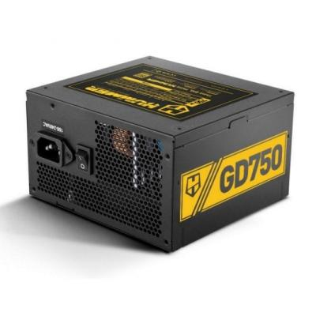

<div id="container-fuenteAlimentacion">

      <div class="container my-5">
    <div class="card shadow-lg border-0">
      <div class="card-body p-5">

        <h1 class="mb-4 text-primary">Nox Hummer GD - Fuente de alimentación 80 PLUS Gold</h1>

        <div class="row align-items-center">
          <!-- Columna del texto -->
          <div class="col-md-8">
            <p class="lead">
              Hummer GD, son las fuentes con certificado 80 PLUS Gold de Nox. Se trata de fuentes que garantizan una eficiencia del 90%, diseñadas para aquellos que necesitan una potencia estable y una garantía de rendimiento en equipos de altas prestaciones.
            </p>

            <a href="https://www.pccomponentes.com/nox-hummer-gd750-750w-80-plus-gold" target="_blank">PCcomponentes</a>
          </div>

          <!-- Columna de la imagen -->
          <div class="col-md-4 text-center">
            
          </div>
        </div>
        
        <hr>

        <h3 class="text-secondary mb-3">Características</h3>

        <ul class="mb-4">
          <li><strong>Mayor eficiencia:</strong>  
            Las fuentes Hummer GD cuentan con certificado 80 PLUS Gold, el cual garantiza una eficiencia del 90%.  
            Esto significa mayor rendimiento con menores costes y menos emisiones de calor.  
            El ventilador trabaja a menor velocidad, reduciendo el ruido producido por la fuente hasta hacerlo prácticamente imperceptible.
          </li>

          <li class="mt-3"><strong>Máxima potencia, mínimo ruido:</strong>  
            Las Hummer GD incluyen un ventilador de 120 mm térmicamente controlado, que solo funciona a máxima potencia cuando es necesario.  
            Así, la fuente mantiene siempre una temperatura óptima con baja sonoridad.  
            Su diseño funcional y dinámico asegura una excelente disipación del calor y un rendimiento perfecto.
          </li>

          <li class="mt-3"><strong>Diseño elegante:</strong>  
            Diseñadas completamente en negro, tanto interior como exteriormente, las fuentes Hummer GD presentan un acabado elegante.  
            Sus cables negros y planos permiten una gestión del cableado cómoda y ordenada, mejorando el flujo de aire dentro del equipo.
          </li>
        </ul>

        <hr>

        <h3 class="text-secondary mb-3">Especificaciones</h3>

        <div class="accordion" id="psuAccordion">

          <!-- Información general -->
          <div class="accordion-item">
            <h2 class="accordion-header" id="headingGeneral">
              <button class="accordion-button" type="button" data-bs-toggle="collapse" data-bs-target="#collapseGeneral" aria-expanded="true">
                Información general
              </button>
            </h2>
            <div id="collapseGeneral" class="accordion-collapse collapse show" data-bs-parent="#psuAccordion">
              <div class="accordion-body">
                <ul>
                  <li>Tipo: ATX12V v2.31</li>
                  <li>Potencia: 750W</li>
                  <li>Datos técnicos: +3.3V - 22A / +5V - 22A / +12V - 62A / -12V - 0.3A / +5VSB - 2,5A</li>
                  <li>Voltaje: 100-240V - 10.0A - 47-63 Hz</li>
                  <li>CircuitShield: OVP, UVP, SCP y OPP</li>
                </ul>
              </div>
            </div>
          </div>

          <!-- Refrigeración -->
          <div class="accordion-item">
            <h2 class="accordion-header" id="headingCooling">
              <button class="accordion-button collapsed" type="button" data-bs-toggle="collapse" data-bs-target="#collapseCooling">
                Refrigeración
              </button>
            </h2>
            <div id="collapseCooling" class="accordion-collapse collapse" data-bs-parent="#psuAccordion">
              <div class="accordion-body">
                <ul>
                  <li>Ventilador: 120 mm de aspas negras</li>
                </ul>
              </div>
            </div>
          </div>

          <!-- Conectores -->
          <div class="accordion-item">
            <h2 class="accordion-header" id="headingConnectors">
              <button class="accordion-button collapsed" type="button" data-bs-toggle="collapse" data-bs-target="#collapseConnectors">
                Conectores
              </button>
            </h2>
            <div id="collapseConnectors" class="accordion-collapse collapse" data-bs-parent="#psuAccordion">
              <div class="accordion-body">
                <ul>
                  <li>1x Conector Principal</li>
                  <li>1x EPS 12V 4+4 pines</li>
                  <li>2x PCIE 6+2 pines</li>
                  <li>5x SATA 4 pines</li>
                  <li>3x Molex 4 pines</li>
                </ul>
              </div>
            </div>
          </div>

          <!-- Dimensiones y peso -->
          <div class="accordion-item">
            <h2 class="accordion-header" id="headingSize">
              <button class="accordion-button collapsed" type="button" data-bs-toggle="collapse" data-bs-target="#collapseSize">
                Dimensiones y peso
              </button>
            </h2>
            <div id="collapseSize" class="accordion-collapse collapse" data-bs-parent="#psuAccordion">
              <div class="accordion-body">
                <ul>
                  <li>Dimensiones: 150 x 140 x 86 mm</li>
                  <li>Peso: 1,73 kg</li>
                </ul>
              </div>
            </div>
          </div>

        </div> <!-- Fin del acordeón -->

      </div>
    </div>
  </div>

</div>